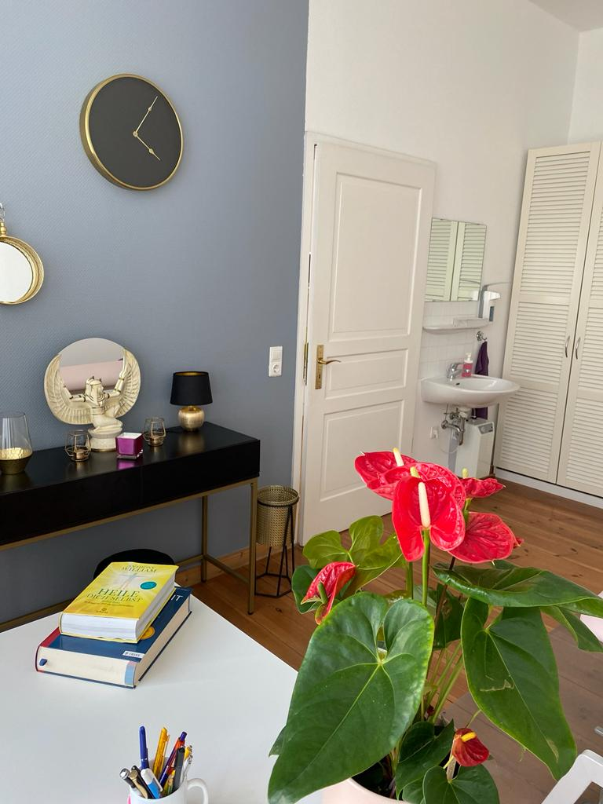

Klassische Massage
Wohlfuhlbehandlung fur den gesamten Korper, manuelle Beeinflussung von Haut und Muskulatur.
Mehr erfahren →
Manuelle Lymphdrainage
Sanfte Entstauung des Gewebes durch spezielle Grifftechniken.
Mehr erfahren →
Faszienmassage
Losung von Verhartungen im Bindegewebe und der Muskelfaszien.
Mehr erfahren →
Triggerpunktmassage
Gezielte Behandlung von Schmerzpunkten im Muskel.
Mehr erfahren →
Fussreflexzonenmassage
Ganzheitliche Behandlung uber die Füsse – stimuliert Organe und Korperbereiche.
Mehr erfahren →